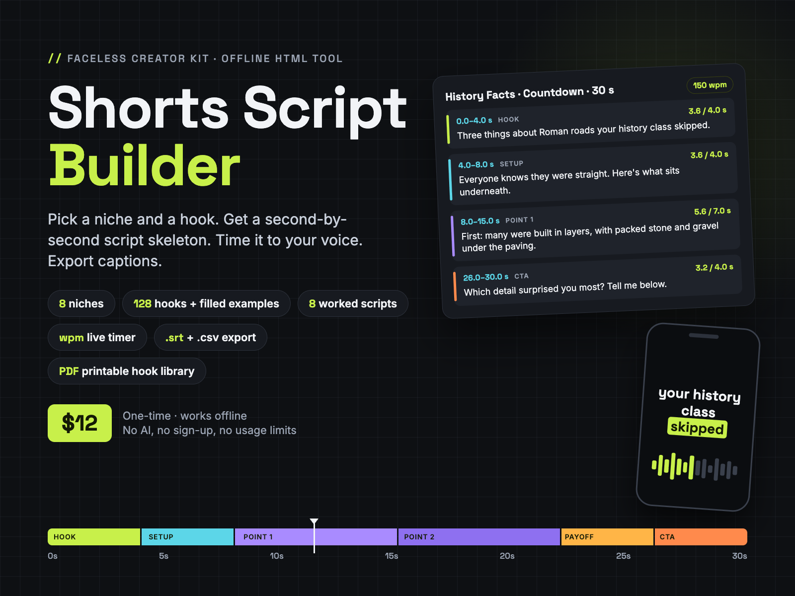
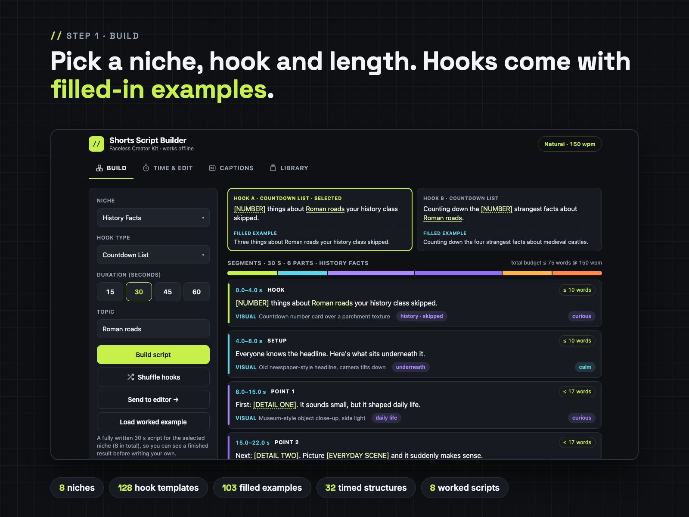
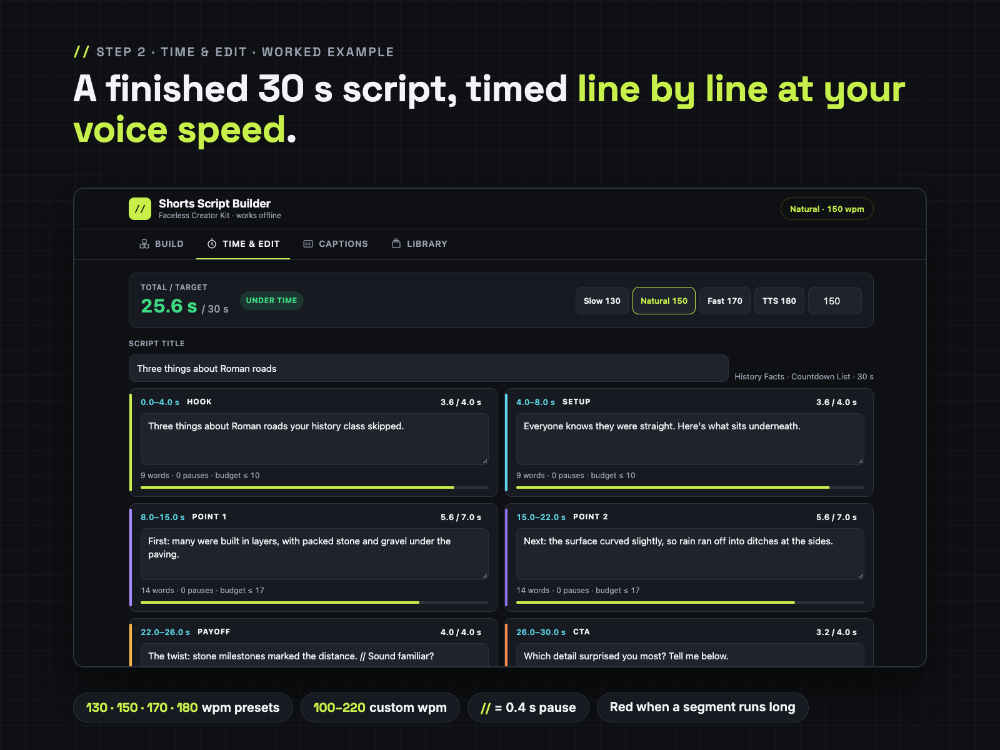
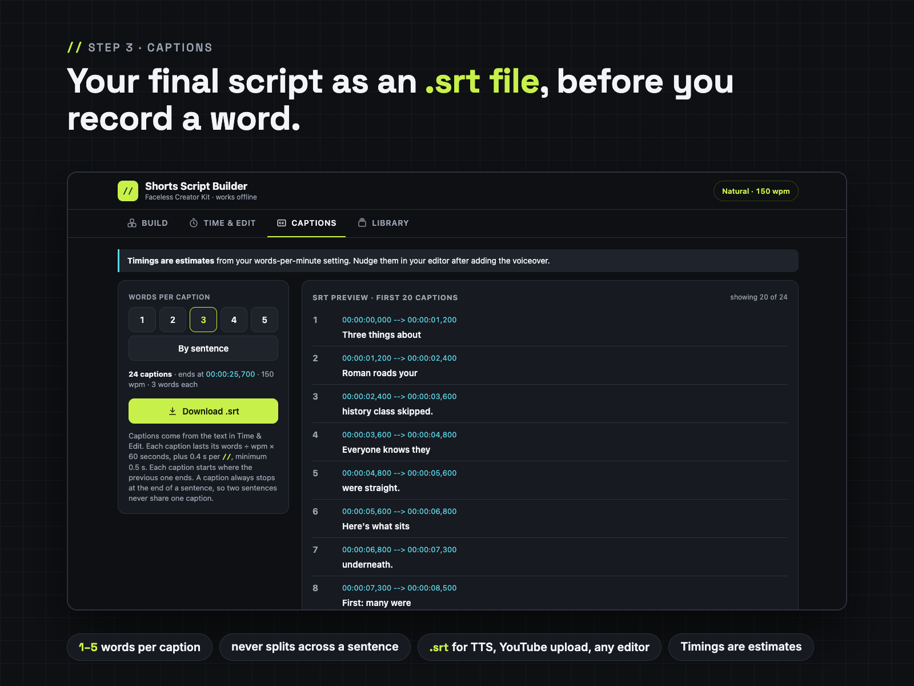
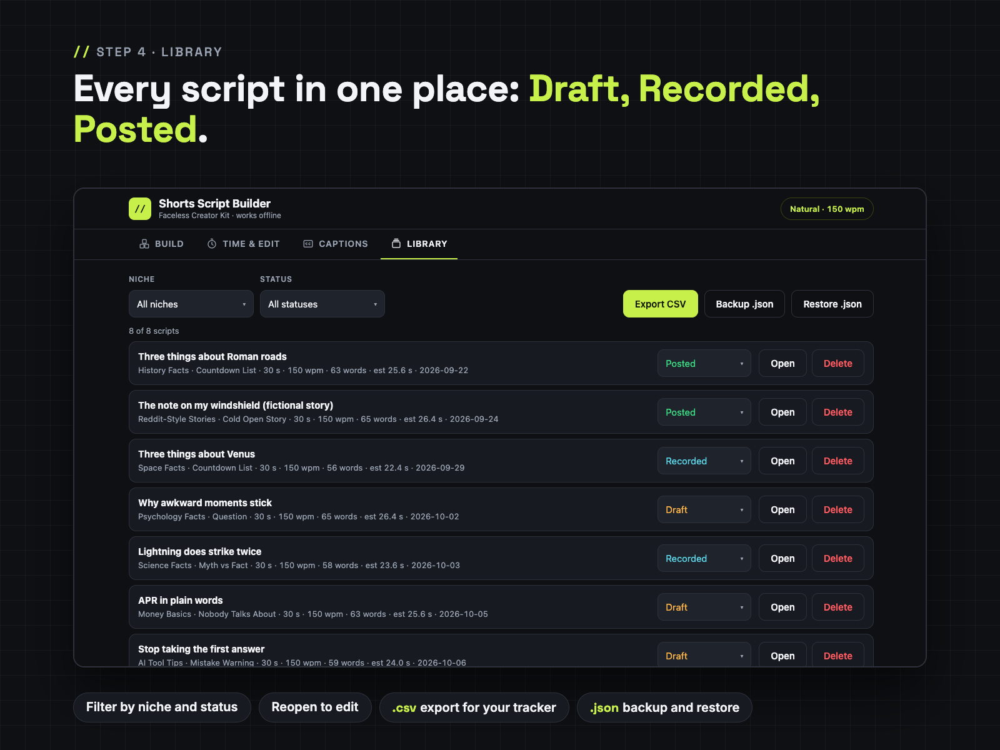
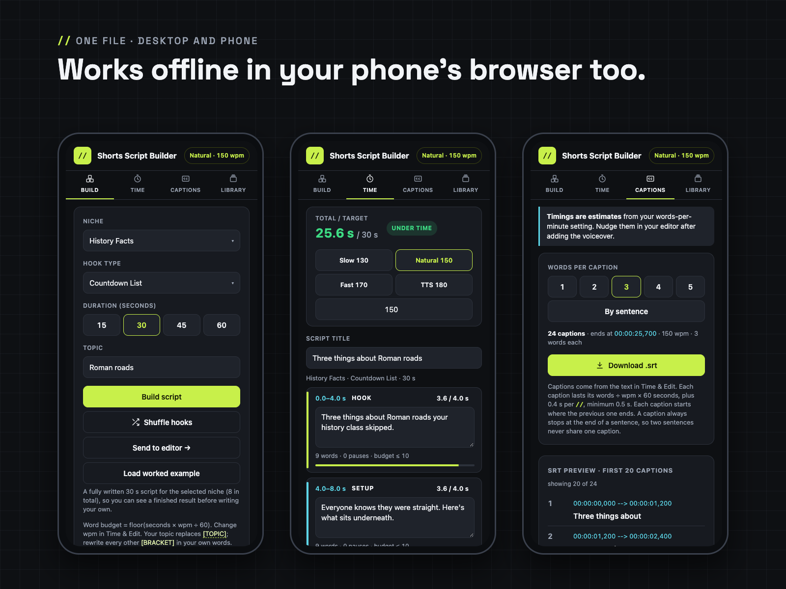
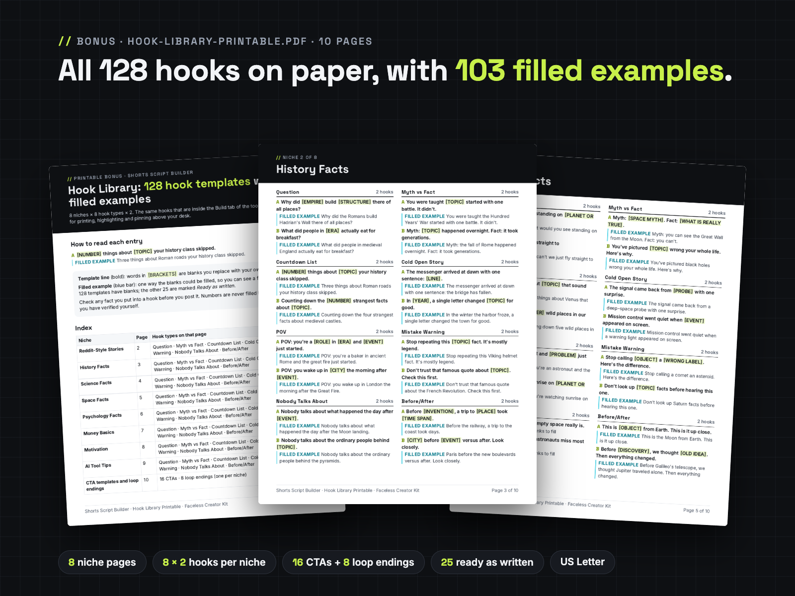

Pick a niche, hook type and length. Get a second-by-second script skeleton, see a filled-in example, time every line to your voice speed and export .srt, .txt or .csv.
One offline HTML file plus a printable hook library, for faceless YouTube Shorts, TikTok and Reels. No AI, no sign-up, no usage limits. From Faceless Creator Kit, the creator-tools imprint of Hustle Studio.

$12.00 USD, one-time, instant download
Buy now: $12 Try the free Lite version🔒 Secure checkout by Waffo Pancake, our merchant of record. We never see your card details. You go straight to the download page after payment.
↩️ 14-day refund, no questions asked. Email chenphien@gmail.com within 14 days of purchase and we refund you in full through Waffo Pancake (see Terms).
✅ Satisfaction guarantee. If the tool won't open or doesn't match this description, you get a full refund.
🆕 New shop, honest about it. This tool is new, so it has no reviews yet, and we won't invent any. Instead you can try the workflow first in the free Lite version (runs right in your browser, on phone or desktop), read 2 real pages of the Hook Library word for word, and every screenshot below comes from the real file.
Free Lite version: 2 niches (Reddit-Style Stories, History Facts), 3 hook types, 30-second structure, fixed 150 wpm timer, Copy as TXT. No email or signup. If it opens on your phone, the full version will too: both are single HTML files with no outside links.
Open the free Lite toolFree Hook Library sample: page 1 (how to read each entry + index) and page 3 (History Facts: all 8 hook types, 16 hooks with filled examples), copied from Hook-Library-Printable.pdf. Save it as a PDF with your browser's Print button.
// for a 0.4-second pause. Segments that run more than 10 percent long turn red, before you record anything.





Build with filled hook examples → Load worked example → TTS 180 preset → Save to library → Captions → Download .srt → Library → the same .srt text parsed onto a caption timeline (our own check page, not a video editor).
| File | What it is |
|---|---|
Shorts-Script-Builder.html | The tool. One offline HTML file (under 600 KB), 4 tabs: Build, Time & Edit, Captions, Library. 8 niches · 8 hook types · 128 hook templates · 103 filled examples · 8 worked 30-second scripts · 32 timed structures · 16 CTA templates · 8 loop endings |
Hook-Library-Printable.pdf | 10 pages, US Letter: all 128 hooks by niche and hook type with filled examples, 16 CTAs, 8 loop endings |
Quick-Start-Letter.pdf | 2 pages, US Letter |
Quick-Start-A4.pdf | 2 pages, A4 (same content) |
LICENSE.txt | Personal and own-channel commercial use |
Shorts-Script-Builder.zip | All 5 files above in one ZIP: 781,300 bytes (about 0.8 MB) to download, 1,358,817 bytes (about 1.4 MB) unpacked |
The download page has a separate link for each of the 5 files and for the ZIP. Not included: no Excel file, no content calendar, no video templates, no voice generator.
Writing a faceless Short usually goes like this: you stare at a blank doc, guess how many words fit in 30 seconds, record or generate the voiceover, find out it runs 63 seconds, then cut and redo it.
Shorts Script Builder turns that into a short, repeatable routine, and it shows you finished examples along the way.
1. Build. Choose one of 8 niches, one of 8 hook types and a length (15, 30, 45 or 60 s) and type your topic. You get two hook templates, each with a filled-in example underneath, and a timed structure: every segment shows its start and end second (for example 0.0–4.0 s HOOK), a word budget at your speaking speed, a sample voice line, a visual / B-roll hint, caption focus words and a voice tone. Pick one of 16 CTA templates, or end with the niche's loop line. Not sure what "finished" looks like? Press Load worked example and a complete 30-second script for that niche opens in the editor.
2. Time & Edit. Rewrite each line in your own words. The timer counts words at your words per minute and adds 0.4 s per // pause, so you see "4.8 / 4.0 s OVER" while you type. Switch to the TTS 180 preset (or your measured speed) and every number updates.
3. Captions. Split your final script into captions of 1 to 5 words, or one per sentence. A caption always stops at the end of a sentence. Preview the first 20 with timecodes and download a standard .srt file.
4. Library. Save each script as Draft, Recorded or Posted, filter by niche or status, reopen it to edit, export everything to CSV for your own tracker, and back up or restore the whole library as .json.
Why an .srt if CapCut has free auto-captions? Auto-captions are great once the voiceover exists, and they listen to the real audio. This .srt is for the step before that: it is your locked, correctly spelled script with estimated timings. People use it to hand a clean script to a text-to-speech tool and keep the same line breaks, to drop captions into editors or workflows that have no auto-captions, to upload a subtitle file to YouTube, or simply as a spelling-checked caption track they nudge into place instead of correcting auto-caption mistakes. If you are happy with auto-captions, the main value here is the structures, hooks, worked examples and the timer.
Bonus: Hook Library Printable (PDF, 10 pages). All 128 hooks laid out by niche × hook type, with the 103 filled examples, plus the 16 CTAs and 8 loop endings. It is printed from the same data that is inside the tool.
The templates help you write your own original scripts. The tool does not use AI, and it does not invent facts or numbers for you: anything that needs a figure says [YOUR VERIFIED NUMBER].
No promise of views or income. What you get is a faster, calmer way to write scripts that fit the length you planned.
Does it work offline, and on my phone?
Yes. It is one HTML file with no outside links, fonts or tracking. Double-click it to open in your browser. On a phone it fits a 390 px wide screen with full-size buttons; some phones open HTML files more easily from a files app. Not sure? Open the free Lite version on your phone first: it is built the same way. If the full version still won't open on your device, the 14-day refund covers you.
Where are my saved scripts kept? Can I lose them?
The Library is stored in your browser on your own device (nothing is uploaded). Clearing your browser data, or opening the file in a different browser, starts with an empty library. So use Backup .json in the Library tab now and then (for example once a week), and Restore .json to bring everything back on any browser or device. Export CSV gives you a spreadsheet copy too.
Will it keep working after browser updates? Will it get updates?
It uses only standard HTML, CSS and JavaScript, with no outside service, account or server that could be shut down, so there is nothing that expires. We don't promise new niches or features on a schedule. If you find a bug, or a browser update breaks something, email us: we fix it and put the fixed file on the same download page, free for buyers.
CapCut already makes free auto-captions. Why would I want the .srt?
If auto-captions already work for you, use them. The .srt is useful before the voiceover exists: as a clean, correctly spelled caption track of your final script, for text-to-speech workflows, for editors without auto-captions, or to upload to YouTube as a subtitle file. Its timings are estimates you nudge after adding the voiceover.
How accurate are the timings?
They are estimates: words ÷ your words per minute × 60, plus 0.4 s per // pause, with each caption at least 0.5 s long. Measure your own speed once (read a 30-second script and double the word count) or use the preset that matches your TTS voice.
Couldn't I just ask a chatbot for a script?
You can. This is different: it runs offline with no account, every structure is pre-timed for 15 to 60 seconds, the timer checks your own wording at your own voice speed line by line, and your scripts stay in a library on your device. Many people use both: draft ideas anywhere, then fit them to time here.
Can I use the scripts on monetized channels?
Yes. Scripts you write with the tool are yours to publish and monetize on your own channels. You may not resell or share the HTML file or the PDFs. See LICENSE.txt.
How do I pay and download?
Checkout runs through Waffo Pancake, our merchant of record, which also sends your receipt. Right after payment you are sent to a download page on this site with a link for each file and the ZIP. Bookmark it to download again later. Questions: chenphien@gmail.com, we reply within 2 business days.
$12.00 USD, one-time
Buy now: $12🔒 Secure checkout by Waffo Pancake (merchant of record), instant download after payment. 14-day no-questions refund; full refund if the tool won't open or doesn't match this page.
Faceless Creator Kit / Hustle Studio is independent and not affiliated with YouTube, TikTok, Instagram or CapCut.